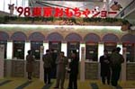
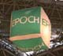
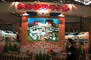
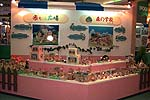
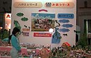
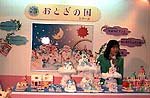

I went to the '98 Tokyo Toy Show, which started today (3/18).
I arrived a little after 10:00 a.m., having been informed in advance that I could enter the show even if I did not work in the toy industry. I arrived after 10:00 a.m., and found that the venue was still sparsely populated, so I felt like I was getting a good deal. (The picture on the right was taken at 11:30 am on my way home, so there were a few more people there at 10:00 am.)
At the entrance, you buy an admission ticket for 1,000 yen. There was a student-looking older brother inside, and it seems that anyone but children can enter. (No business card is required.)

At any rate, I got a map of the venue at the entrance to go straight to Epoch's booth.
The exhibit is located in the hall on the left (East 4), just off the escalator.
I could easily recognize the "EPOCH" large balloons hanging from the ceiling.


When I went to Epoch's booth, a huge diorama of Sylvania was right at the entrance!
It was on display along with a sign that read "Exciting! Flea Market" was on display along with a sign. There were probably more than 100 Sylvanians in the exhibit, and they were displayed not only there, but also behind and to the left and right of the exhibit. The new Forest Market and last year's Forest School were also displayed in a large space.

I took a series of pictures with my digital camera without any regard to the announcement that photography was prohibited at the venue. There were many people from Epoch in the audience, but they didn't say anything, so I felt relieved for the time being. However, the digital camera I am using is a little old (about 2 years old), so it is a pity that I cannot take close-up photos. I want a good one!

I didn't know much about the "fairyland series" because I don't see them in stores very often and I don't have them at home, but at the venue, a lady put on a microphone and introduced three items that will be released on June 26: "Oasis in the Sky", "Castle Floating on Clouds", and "Rainbow and Cloud Kanrangsha".
I was happy to get new information, but was shocked to see that it was already in the 1998 catalog that I got on the train on the way home. I didn't have the new 1998 catalog at home, and since I rarely go to toy stores, I felt a little sorry for myself for not gathering information.